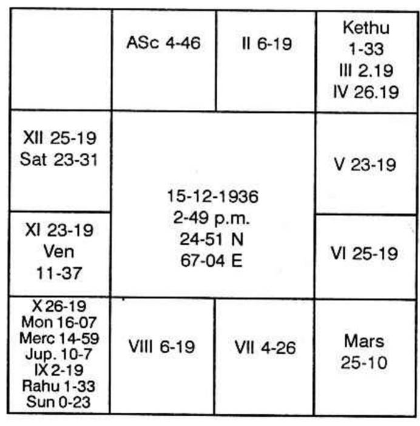

"An agreement was signed with the contractor on 14-10-67 requesting him to construct a building for my use at a cost of Rs. 50,000.
I paid Rs. 6,600 on 29-6-61, secondly on 14-10-68; Rs. 10,000, thirdly on 21-12-68 Rs. 7,000. The balance is to be paid. Source and date of repayment, God alone knows" says one student.
"Why do you say that God alone knows. Cannot our Guruji tell you when and how you will repay and regain peace."
"Yes. He can help us by prediction."
"Then what do you expect from an astrologer. One classmate may consult about when he will get married. Since he is depressed and dejected as he remains unmarried and he had his 37th birthday, only yesterday. Will the astrologer relieve his worry or satisfy him by giving any of his aged daughters in marriage to him? Or if I go and say that there is pressure for money etc, which you are aware of, will he issue a cheque and help me? If our room mate requests him to find out when he can get accommodation, will he make a search for him. Astrologer can give only this much relief. That is he can remove the worry. How? He will predict when the matter will materialise. "Alright let us meet him.
Both enter.
Yes: come in, come on; Why do you hesitate?"
"Sir, we have not taken an appointment, but we have taken a chance".
"What for?"
The worried person narrates the cause of his worry and asks "when can I be free from these, by paying the Balance?"
"Have you brought your horoscope?"
"Yes, Sir here it is. I have worked out as per your method.'
Horoscope is as under:

Venus Dasa balance 15 years, 9 months 27 days.
It is verified. An intelligent student, without a single mistake has calculated and erected the map according to Krishnamurti Padhdhati.
"The chart is perfectly alright. Give me few minutes"
Two minutes passed. I made all calculations and I wrote the dates of repaying in a slip of paper.
I asked him "What is the time, now?"
"10-20 A M. Sir."
"What is the lagna?"
"Let me refer to Tables of Houses and tell you, Sir".
"Yes, Tables of Houses furnishes correct information. There is the ready reckoner. Please refer."
"Mesha started at 9-38 A.M. Sir. So it is Mesha."
"Who is the owner of Mesha?"
"Mars Sir"
"What is your day of birth?"
"Tuesday"
"Who governs Tuesday?"
"Mars"
"Next, where is Moon now?"
"In Taurus"
"Who is its Lord?"
"Venus"
"What is your birth star?"
"Poorvashada"
"Who rules Poorvashada?"
"Venus Sir"
"You are the third person visiting now."
"Do you see that your lord of lagna is Mars, lord of your star is Venus"
"Yes Sir."
"What did I teach you in the class?"
"You said that one can consult an astrologer only at such a time so that the ruling planet at that moment agrees with the ruling planets at his or her birth moment."
"Are you satisfied with the correctness of your chart?"
"Yes Sir."
"Now, let me tell you, the next date of repayment will be 15-3-69".
"How did you arrive at it in 2 minutes, Sir."
If I explain, it will take 15 minutes. Anyhow let me oblige, you both.
What do you mean by an agreement with contractor. Does it not mean that you and another person sign a document wherein both agree. So which houses are we to judge. 3rd house counted from your lagna and 3rd counted from 7th i.e. houses 3 and 9 in your chart.
3rd house is vacant: Owner is Mercury. It has no planet in its stars Ashlesha, Jyeshta or Revathi. So Mercury is one of the significators.
Jupiter, Moon and Mercury are in the 9th house: Mercury, we have judged. Venus alone is in Moon's star. Saturn is in Jupiter's star. So Mercury, Venus, Saturn, Moon, Jupiter are the significators. Indude Rahu and Ketu also as it represents Jupiter & Mercury respectively.
What was the period running at the time of signing the contract? Moon Dasa, Venus Bhukti, Saturn Anthra, Venus Shookshma. The day was a Saturday. The star was Saturn star. The time of signing the contract was Makara sign, Moon star.
Next you paid first installment. Houses 8 and 12 indicate the repayment, just like 2 and 6 when judged together, denote borrowing.
You repaid during the Moon Dasa, Sun Bhukti, Saturn Anthra on a Saturday when Moon was in Cancer owned by itself.
Next payment was made during Mars Dasa, Mars Bhukti, Mars Anthra, Rahu Shookshma on a Monday in Rahu constellation in Mercury sign.
The third was paid on 21-12-1968 during Mars Dasa, Mars Bhukti, Saturn Anthra on a Saturday when Moon was in Makara ruled by Saturn.
"How is it, Sir, that Saturn gives me money and also makes me part with it?"
In your chart, Saturn owns both 11th and 12th houses: No planet is in 12; Saturn alone is in 11. No planet is in Saturn star. Hence Saturn gives, due to 11th house and repays due to 12th house result. So, on the days governed by Saturn, you get cheques and also, you issue cheques.
"Can I pay in full?"
"No."
"Whenever Saturn rules, all payments will be made only in installments."
"Why, Sir."
If Saturn indicates disease, Saturn gives a chronic one.
If we get or give, Saturn prolongs the period by way of installment. It is a delaying planet to fulfil one's desire whereas it is not denying nor disappointing one.
When will I clear off the loan?
"Mars Dasa Rahu Bhukti Sun Anthra – January 1970."
"Will he give me time to that extent?"
Whether he gives or not, you clear off only when the conjoined period of planets, deposited in the constellation of planet in 8 operates; Judge the house.
"Thanks, Sir."
Both go smilingly and with the hope that he can repay and clear off in January, 1970 and with a decision to take time from the contractor.
"Is your worry over?" asks the classmate, while they are putting on shoes sitting in the outside verandah
"What doubt is there? He deals with the subject so quickly, explains it in meticulous detail so lucidly and encourages with his convincing arguments so confidently". So saying they go on and I can't hear any more that they talk.